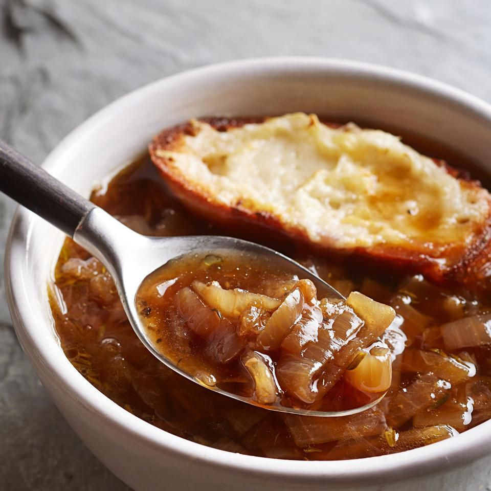

French Onion Soup

French onion soup is a timeless classic that embodies the rich culinary tradition of France. This soul-warming dish combines deeply caramelized onions with savory beef broth, topped with crusty bread and melted cheese. The result is a comforting bowl of soup that delights the senses with its complex flavors and satisfying textures. Whether enjoyed as a cozy starter or a hearty meal on its own, French onion soup is sure to evoke feelings of warmth and nostalgia.
Ingredients
- 5 large onions, thinly sliced
- 4 tablespoons unsalted butter
- 2 tablespoons olive oil
- 2 cloves garlic, minced
- 1 teaspoon granulated sugar
- 1/2 cup dry white wine (optional)
- 8 cups beef broth
- 2 bay leaves
- Salt and black pepper to taste
- Baguette or French bread, sliced
- Gruyère cheese or Swiss cheese, shredded
- Fresh thyme or parsley for garnish (optional)
Instructions
Caramelize the Onions:
- In a large pot or Dutch oven, melt the butter and olive oil over medium heat.
- Add the sliced onions and cook slowly, stirring occasionally, until they are deeply caramelized and golden brown. This process can take 30-45 minutes.
Add Garlic and Sugar:
- Stir in the minced garlic and granulated sugar, and cook for an additional 1-2 minutes until the garlic is fragrant and the sugar has dissolved.
Deglaze with Wine (Optional):
- If using white wine, pour it into the pot and stir, scraping up any browned bits from the bottom of the pot. Allow the wine to simmer for a few minutes to reduce slightly.
Simmer with Beef Broth:
- Pour in the beef broth and add the bay leaves. Season with salt and pepper to taste.
- Bring the soup to a simmer, then reduce the heat to low and let it simmer gently for 20-30 minutes to allow the flavors to meld together. Taste and adjust seasoning if needed.
Prepare the Bread and Cheese:
- Preheat the oven to broil.
- Arrange the sliced bread on a baking sheet and toast them in the oven until lightly golden on both sides.
Assemble and Serve:
- Ladle the hot soup into oven-safe bowls.
- Place a slice of toasted bread on top of each bowl, covering the surface of the soup.
- Sprinkle a generous amount of shredded Gruyère or Swiss cheese over the bread.
Broil the Soup:
- Place the bowls of soup under the broiler for 2-3 minutes, or until the cheese is melted and bubbly, and starts to brown slightly.
Garnish and Enjoy:
- Carefully remove the bowls from the oven and garnish with fresh thyme or parsley if desired.
- Serve immediately, allowing the cheesy bread to soak up the flavorful broth with each spoonful.
- Enjoy the comforting flavors and rustic charm of this classic French onion soup, a beloved dish that never fails to impress.
Home